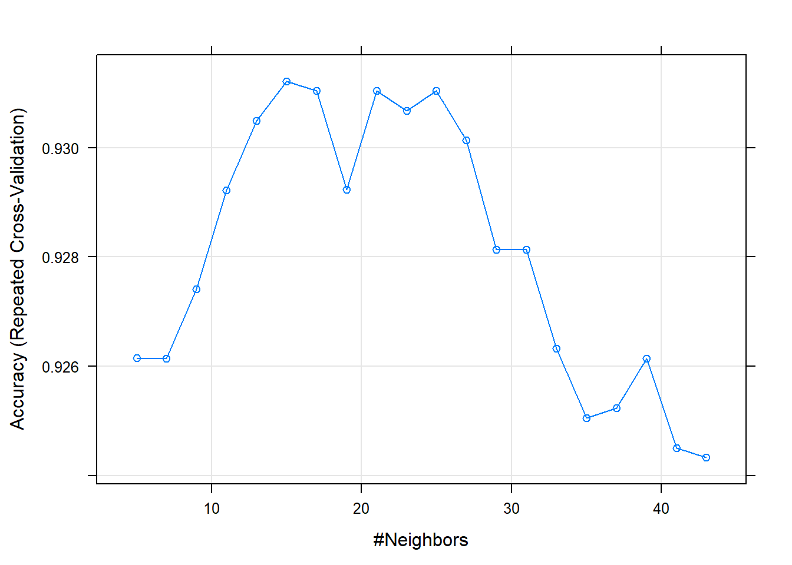
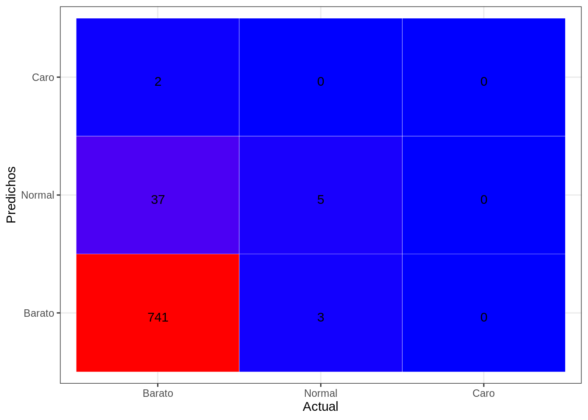
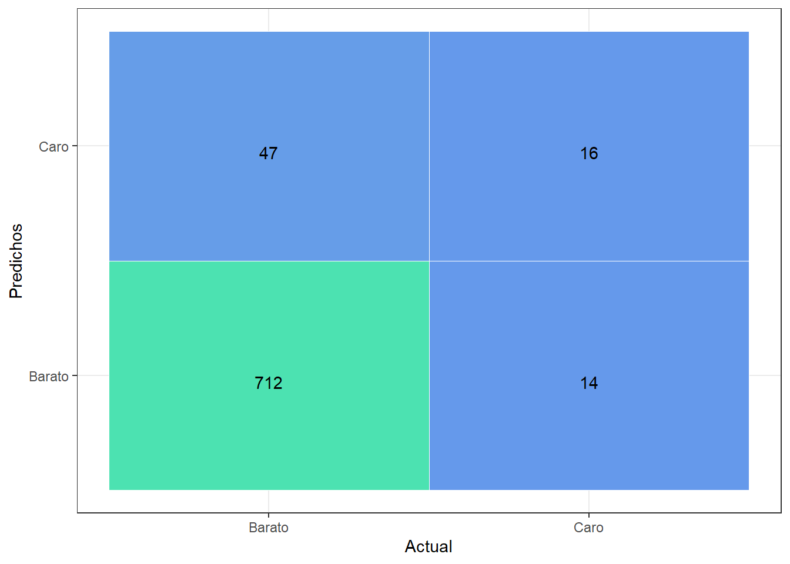
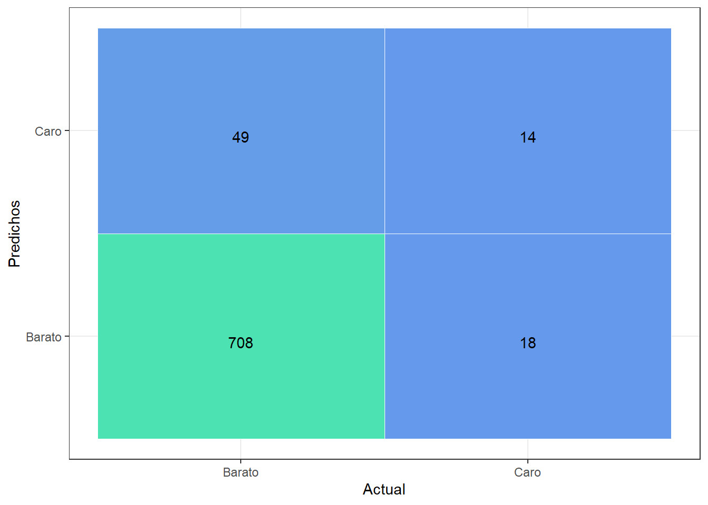
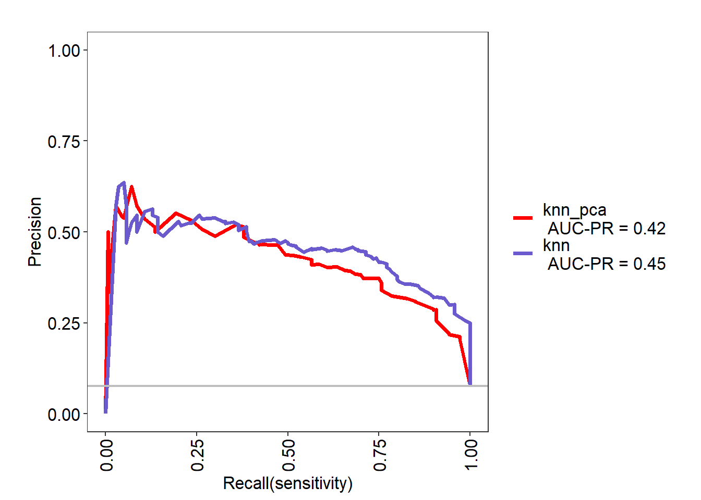
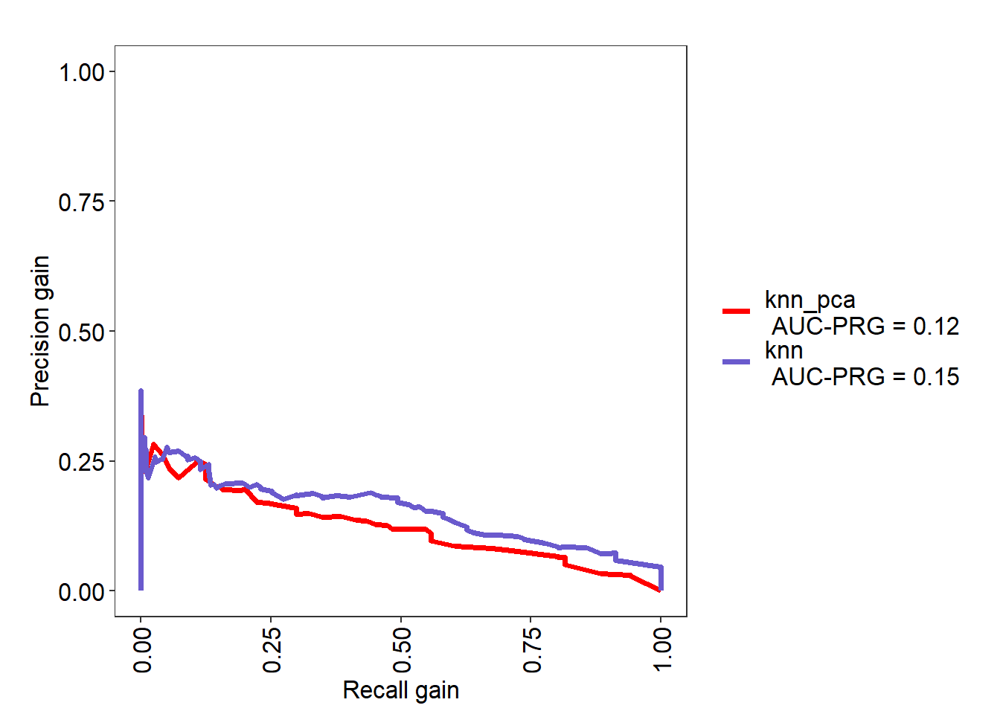
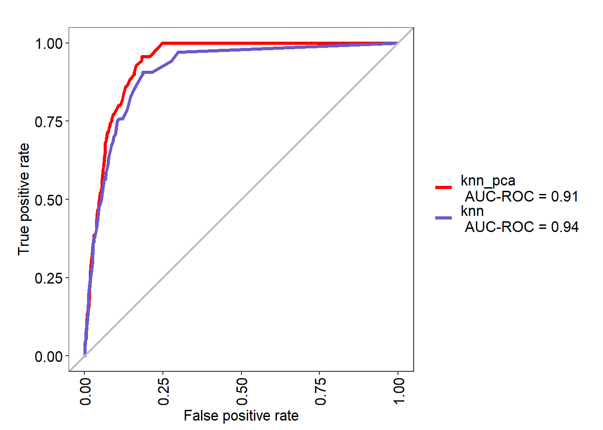

A continuación aplicaremos un modelo knn o k nearest neighbors a nuestro grupo de datos. El algoritmo clasifica cada dato nuevo en el grupo que corresponda, según tenga “k” vecinos más cerca de un grupo o de otro. Es decir, calcula la distancia del elemento nuevo a cada uno de los existentes, y ordena dichas distancias de menor a mayor para ir seleccionando el grupo al que pertenece. Este grupo será, por tanto, el de mayor frecuencia con menores distancias.
El knn es un algoritmo de aprendizaje supervisado, es decir, que a partir de un juego de datos inicial su objetivo será el de clasificar correctamente todas las instancias nuevas.
Cargamos las librerias y los datos que utilizaremos para el entrenamiento, con el conjunto de train, y la evaluación del modelo con el conjunto de test.
library(class)
library(dplyr)
library(caret)
library (ROCR)
library(MASS)
library(hmeasure)
library(data.table)
library(MLeval)
source("funcs.R")
data(Pima.te)dataTrain_origin <- readRDS("datasetTrainModeloClasificador.rds")
dataTest_origin <- readRDS("datasetTestModeloClasificador.rds")Procedemos a despejar de los dataset (train y test) la variable objetivo original SalePrice. De la cual ya hemos creamos la variable GrupoPrecio, del tipo categorica. Separando asi por una parte un grupo de casas baratas y otro grupo de casas caras.
Nuestro modelo clasificará casas entre estos dos grupos.
dataTrain <- dataTrain_origin %>% dplyr::select(-SalePrice)
dataTest <- dataTest_origin %>% dplyr::select(-SalePrice)Para este modelo se han elegido un grupo de caracteristica del dataset original. Se han escogido debido a un analisis previo del conjunto de datos en el que mediante un modelo random forest se ha determinado el grupo de caracteristicas más importantes. A continuación preparamos los dataset para entrenar el modelo y posteriormente evaluar como se comporta con el conjunto de test. Debido a que nuestros datos tiene variables categoricas, tenemos que transformarlas a numericas para el modelo knn.
remove <- c('GrupoPrecio')
col_to_factor <- colnames(dataTrain) [! colnames(dataTrain) %in% remove]
dataTrain <- dataTrain %>% as_factor_all(col_to_factor)
dataTest <- dataTest %>% as_factor_all(col_to_factor)
XTrain <- dataTrain %>% dplyr::select(-GrupoPrecio)
YTrain <- dataTrain$GrupoPrecio
XTest <- dataTest %>% dplyr::select(-GrupoPrecio)
YTest <- dataTest$GrupoPrecioEntrenamos el modelo a la vez que buscamos el k más optimo para el conjunto de datos de train normalizados. A continuación evaluamos nuestro modelo con el conjunto de test normalizados con la información de train.
#Normalización
ctrNorm <- preProcess(x = XTrain, method = c("center", "scale"))
dataTrainNorm <- predict(ctrNorm, dataTrain)
#Entrenamiento y busqueda de k más optimo
set.seed(400)
ctrl <- trainControl(method="repeatedcv", repeats = 3, classProbs = TRUE, summaryFunction = twoClassSummary, savePredictions = TRUE)
knn <- train(GrupoPrecio ~ ., data = dataTrainNorm, method = "knn", trControl = ctrl, tuneLength = 30)## Warning in train.default(x, y, weights = w, ...): The metric "Accuracy" was not
## in the result set. ROC will be used instead.(knn)## k-Nearest Neighbors
##
## 1837 samples
## 26 predictor
## 2 classes: 'Barato', 'Caro'
##
## No pre-processing
## Resampling: Cross-Validated (10 fold, repeated 3 times)
## Summary of sample sizes: 1653, 1654, 1653, 1653, 1654, 1653, ...
## Resampling results across tuning parameters:
##
## k ROC Sens Spec
## 5 0.8400397 0.9781993 0.29523810
## 7 0.8767752 0.9811382 0.25952381
## 9 0.9039852 0.9817253 0.26904762
## 11 0.9122755 0.9842812 0.26190476
## 13 0.9170407 0.9858487 0.26190476
## 15 0.9193636 0.9866342 0.25952381
## 17 0.9204341 0.9880114 0.24047619
## 19 0.9194293 0.9880125 0.21904762
## 21 0.9228137 0.9893874 0.22380952
## 23 0.9245883 0.9903690 0.20714286
## 25 0.9257244 0.9915501 0.19761905
## 27 0.9249395 0.9917461 0.18333333
## 29 0.9277105 0.9913528 0.16190476
## 31 0.9309312 0.9919411 0.15476190
## 33 0.9308468 0.9927277 0.12142857
## 35 0.9317570 0.9927277 0.10476190
## 37 0.9317156 0.9935143 0.09761905
## 39 0.9319748 0.9937104 0.10714286
## 41 0.9335930 0.9937104 0.08571429
## 43 0.9351690 0.9943010 0.07619048
## 45 0.9363796 0.9944970 0.07142857
## 47 0.9365199 0.9948880 0.06428571
## 49 0.9358207 0.9952825 0.06428571
## 51 0.9350563 0.9948892 0.06428571
## 53 0.9347691 0.9958742 0.04523810
## 55 0.9353218 0.9956782 0.04047619
## 57 0.9357485 0.9962664 0.03809524
## 59 0.9355316 0.9968581 0.03333333
## 61 0.9361345 0.9966609 0.02857143
## 63 0.9359722 0.9972503 0.03095238
##
## ROC was used to select the optimal model using the largest value.
## The final value used for the model was k = 47.plot(knn)
#Normalizamos con la información de train.
XTestNorm <- predict(ctrNorm, XTest)
pred <- predict(knn, newdata = XTestNorm )
cm <- confusionMatrix(pred, YTest, mode = "prec_recall" )
(cm)## Confusion Matrix and Statistics
##
## Reference
## Prediction Barato Caro
## Barato 719 57
## Caro 7 6
##
## Accuracy : 0.9189
## 95% CI : (0.8976, 0.937)
## No Information Rate : 0.9202
## P-Value [Acc > NIR] : 0.585
##
## Kappa : 0.1342
##
## Mcnemar's Test P-Value : 9.068e-10
##
## Precision : 0.9265
## Recall : 0.9904
## F1 : 0.9574
## Prevalence : 0.9202
## Detection Rate : 0.9113
## Detection Prevalence : 0.9835
## Balanced Accuracy : 0.5428
##
## 'Positive' Class : Barato
## tab_test <- table(pred, YTest, dnn = c("Actual", "Predichos"))
draw_confusion_matrix(tab_test, "Actual", "Predichos")dataTrain_origin_PCA <- readRDS("datasetTrainModeloClasificadorPCA.rds")
dataTest_origin_PCA <- readRDS("datasetTestModeloClasificadorPCA.rds")
PCATrain <- as.data.table(cbind(dataTrain_origin_PCA$ind$coord, GrupoPrecio = dataTrain_origin %>% dplyr::select(c("GrupoPrecio"))))
PCATest <- as.data.table(cbind(dataTest_origin_PCA$ind$coord, GrupoPrecio = dataTest_origin %>% dplyr::select(c("GrupoPrecio"))))
XPCATrain <- PCATrain %>% dplyr::select(-GrupoPrecio)
YPCATrain <- PCATrain$GrupoPrecio
XPCATest <- PCATest %>% dplyr::select(-GrupoPrecio)
YPCATest <- PCATest$GrupoPrecio
set.seed(400)
ctrl_pca <- trainControl(method="repeatedcv",repeats = 3,classProbs = TRUE, summaryFunction = twoClassSummary, savePredictions = TRUE)
knn_pca <- train(GrupoPrecio ~ ., data = PCATrain, method = "knn", trControl = ctrl_pca, tuneLength = 30)## Warning in train.default(x, y, weights = w, ...): The metric "Accuracy" was not
## in the result set. ROC will be used instead.(knn_pca)## k-Nearest Neighbors
##
## 1837 samples
## 50 predictor
## 2 classes: 'Barato', 'Caro'
##
## No pre-processing
## Resampling: Cross-Validated (10 fold, repeated 3 times)
## Summary of sample sizes: 1653, 1654, 1653, 1653, 1654, 1653, ...
## Resampling results across tuning parameters:
##
## k ROC Sens Spec
## 5 0.8412379 0.9738810 0.21904762
## 7 0.8706548 0.9778153 0.22619048
## 9 0.8803959 0.9801694 0.19047619
## 11 0.8929267 0.9825247 0.20238095
## 13 0.8961235 0.9834992 0.18809524
## 15 0.8942155 0.9844820 0.18571429
## 17 0.8973935 0.9846780 0.18333333
## 19 0.9016498 0.9854647 0.17142857
## 21 0.9030207 0.9864497 0.15238095
## 23 0.9051251 0.9884140 0.14761905
## 25 0.9076684 0.9888026 0.15476190
## 27 0.9071224 0.9884116 0.14523810
## 29 0.9066801 0.9880137 0.14285714
## 31 0.9075557 0.9868395 0.14523810
## 33 0.9068684 0.9866423 0.14285714
## 35 0.9051864 0.9862490 0.12857143
## 37 0.9045340 0.9884105 0.11428571
## 39 0.9026327 0.9895893 0.10000000
## 41 0.9029672 0.9897877 0.08809524
## 43 0.9037768 0.9917519 0.07380952
## 45 0.9046942 0.9945017 0.07380952
## 47 0.9046087 0.9950876 0.06428571
## 49 0.9043474 0.9946966 0.06428571
## 51 0.9034490 0.9950899 0.05714286
## 53 0.9028450 0.9952872 0.04761905
## 55 0.9022860 0.9952883 0.03333333
## 57 0.9019546 0.9947001 0.03571429
## 59 0.9021642 0.9954867 0.03333333
## 61 0.9011967 0.9954844 0.03809524
## 63 0.9020660 0.9952860 0.02619048
##
## ROC was used to select the optimal model using the largest value.
## The final value used for the model was k = 25.plot(knn_pca)
pred_pca <- predict(knn_pca, newdata = XPCATest)
cm_pca <- confusionMatrix(pred_pca, YPCATest, mode = "prec_recall" )
(cm_pca)## Confusion Matrix and Statistics
##
## Reference
## Prediction Barato Caro
## Barato 712 47
## Caro 14 16
##
## Accuracy : 0.9227
## 95% CI : (0.9018, 0.9403)
## No Information Rate : 0.9202
## P-Value [Acc > NIR] : 0.4289
##
## Kappa : 0.3085
##
## Mcnemar's Test P-Value : 4.182e-05
##
## Precision : 0.9381
## Recall : 0.9807
## F1 : 0.9589
## Prevalence : 0.9202
## Detection Rate : 0.9024
## Detection Prevalence : 0.9620
## Balanced Accuracy : 0.6173
##
## 'Positive' Class : Barato
## tab_test_pca <- table(pred_pca, YPCATest, dnn = c("Actual", "Predichos"))
draw_confusion_matrix(tab_test_pca, "Actual", "Predichos")
res <- evalm(list(knn_pca,knn),gnames = c('knn_pca','knn'))
saveRDS(knn_pca, "knn.rds")